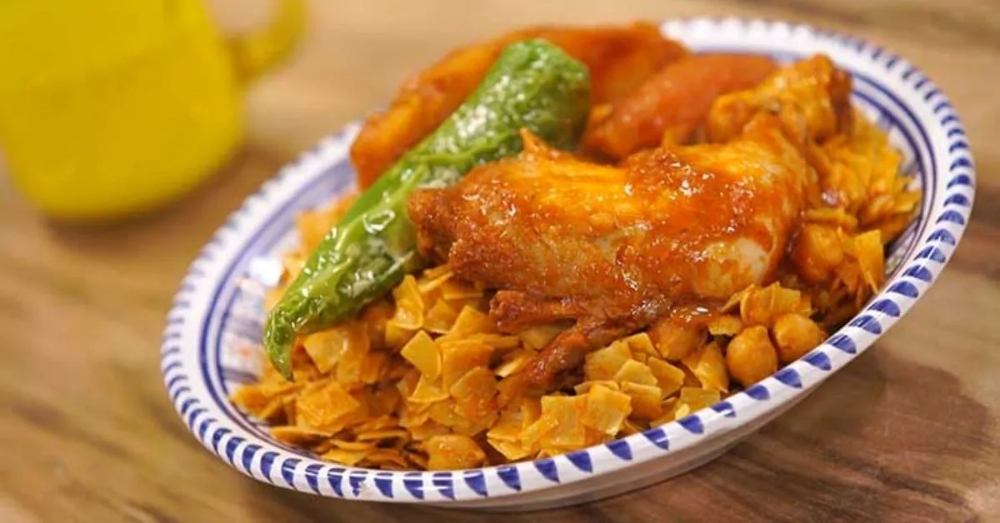

Nwasser

Description
Nwasser is a traditional Tunisian pasta dish made with hand-rolled square-shaped pasta, cooked with a flavorful sauce of meat, vegetables, and spices.
It is often prepared with chicken or lamb and is rich in taste, thanks to a blend of Tunisian spices.
Ingredients
- 2 cups nwasser pasta
- 2 tablespoons olive oil
- 1 onion, chopped
- 2 cloves garlic, minced
- 1 pound chicken or lamb
- 2 tomatoes, grated
- 1 teaspoon harissa
- 1 teaspoon ground coriander
- 1 teaspoon paprika
- Salt and pepper to taste
- 1 carrot, sliced
- 1 zucchini, chopped
- 3 cups chicken or vegetable broth
- 1 can chickpeas, drained
- Fresh parsley for garnish
Steps
- Heat olive oil in a pot and sauté the onion and garlic until fragrant.
- Add the chicken or lamb and brown it on all sides.
- Stir in the tomatoes, harissa, coriander, paprika, salt, and pepper.
- Add the carrots, zucchini, and chickpeas, then pour in the broth.
- Cover and let it simmer until the meat is tender.
- In a separate steamer, steam the nwasser pasta until soft and fluffy.
- Mix the nwasser with the sauce, ensuring the flavors are well absorbed.
- Garnish with fresh parsley and serve warm.
Hier kommst zurück zur Homepage